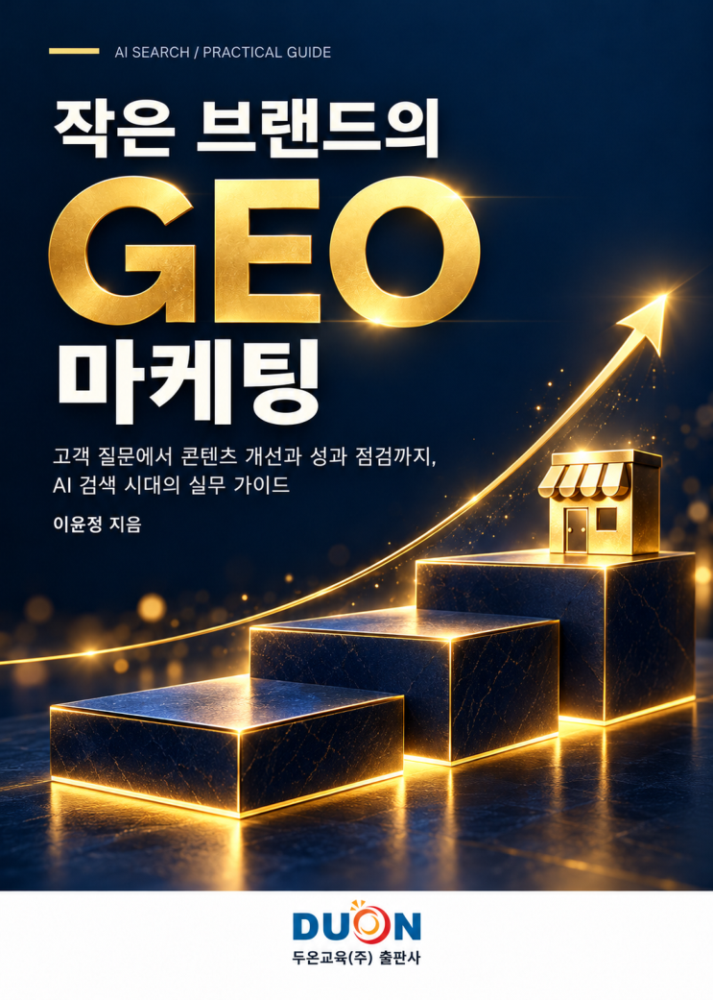

이윤정 지음 · 두온교육 출판
작은 브랜드의 GEO 마케팅
고객 질문에서 콘텐츠 개선과 성과 점검까지, AI 검색 시대의 실무 가이드
책의 구성
- 고객의 질문에서 GEO 시작하기
- 브랜드 정보를 한곳에 정리하기
- 고객 질문에 답하는 콘텐츠 만들기
- 콘텐츠에서 상담으로 이어지는 길 정리하기
- 기록을 보며 콘텐츠와 운영 개선하기

이윤정 지음 · 두온교육 출판
고객 질문에서 콘텐츠 개선과 성과 점검까지, AI 검색 시대의 실무 가이드